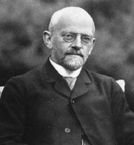

《科学美国人》这样评价图灵性情矛盾的一生：“个人生活隐秘又喜欢大众读物和公共广播，自信满怀又异常谦卑。一个核心的悖论是，他认为电脑能够跟人脑并驾齐驱，但是他本人的个性却是率性而为、我行我素、无法预见，一点也不像机器输出来的东西。”
图灵提出的图灵机开创了计算机科学领域，如今每一名软件工程的学生都得了解图灵机。为了判定机器是否具备智能，图灵还提出了著名的“图灵测试”，人工智能领域工作者始终在朝着让AI通过图灵测试的目标努力。
图灵有花粉过敏的毛病，又拒绝使用脱敏药物。于是他骑车去布雷契莱园上下班时就戴上防毒面具，十分抢眼。由于战争时期瓷器奇缺，为了防止茶杯丢失，他用铁链把茶杯锁定在暖气管子上，成为布雷契莱园的笑谈。
- 中文名
- 艾伦·麦席森·图灵
- 英文名
- Alan Mathison Turing
- 国籍
- 腐国
- 出生日期
- 1912-06-23
- 逝世日期
- 1954-06-07
- 身份
- 数学家、逻辑学家、密码学家
- 主要成就
- 解答了可判定性问题
- 二战中破解德军密码系统“Enigma”
- 提出可鉴别真正人工智能的图灵测试
经常被搞混的另一位计算机科学家
由于Turing的工作而丢了饭碗
图灵是谁？
艾伦·图灵，想必大部分同学对这个名字都并不陌生。但对于图灵的生平事迹，同学们能说得出多少呢？阅读这篇文章，了解一下祖师爷的传奇一生吧！
艾伦·麦席森·图灵（Alan Mathison Turing，1912年6月23日－1954年6月7日），英国数学家、逻辑学家，被称为计算机科学之父，人工智能之父。
1931年图灵进入剑桥大学国王学院，毕业后到美国普林斯顿大学攻读博士学位，第二次世界大战爆发后回到剑桥，后曾协助军方破解德国的著名密码系统Enigma，帮助盟军取得了二战的胜利。
2013年12月24日，在英国司法大臣克里斯·格雷灵（Chris Grayling）的要求下，英国女王向图灵颁发了皇家赦免。英国司法大臣宣布，“图灵的晚年生活因为其同性取向（同性恋）而被迫蒙上了一层阴影，我们认为当时的判决是不公的，这种歧视现象现在也已经遭到了废除。为此，女王决定为这位伟人送上赦免，以此向其致敬。”
图灵对于人工智能的发展有诸多贡献，提出了一种用于判定机器是否具有智能的试验方法，即图灵试验，至今，每年都有试验的比赛。此外，图灵提出的著名的图灵机模型为现代计算机的逻辑工作方式奠定了基础。
下面，我们来逐项了解图灵的主要成就吧！

英俊的腐国男孩
希尔伯特的梦碎与图灵机的诞生
十九世纪下半叶，德国数学家康托尔创立了著名的集合论，在集合论刚产生时，曾遭到许多人的猛烈攻击。但不久这一开创性成果就为广大数学家所接受了，并且获得广泛而高度的赞誉。数学家们发现，从自然数与康托尔集合论出发可建立起整个数学大厦。因而集合论成为现代数学的基石。“一切数学成果可建立在集合论基础上”这一发现使数学家们为之陶醉。
1903年，一个震惊数学界的消息传出：集合论是有漏洞的。这就是英国数学家罗素提出的著名的罗素悖论。证明中最关键的一步仅需要很简单的逻辑，可以通俗解释如下：一位理发师：他只给所有不给自己理发的人理发，不给那些给自己理发的人理发。 问：他要不要给自己理发呢？ 如果他给自己理发，他就属于那些给自己理发的人，因此他不能给自己理发。如果他不给自己理发，他就属于那些不给自己理发的人，因此他就应该给自己理发。
罗素悖论引发了第三次数学危机。罗素悖论一提出就在当时的数学界与逻辑学界内引起了极大震动。德国的著名逻辑学家弗雷格在他的关于集合的基础理论完稿付印时，收到了罗素关于这一悖论的信。他立刻发现，自己忙了很久得出的一系列结果却被这条悖论搅得一团糟。他只能在自己著作的末尾写道：“一个科学家所碰到的最倒霉的事，莫过于是在他的工作即将完成时却发现所干的工作的基础崩溃了。”
但很快，它得到了“解决”，简单来说就是增加限制，禁止这样的情况发生。但如何避免这样的情况再度发生呢？这就需要直接证明新集合论里没有矛盾。如果最后能完成这些无矛盾性的证明，则整个数学也就有了可靠的基础。
20世纪20年代，人称“最后一位数学全才”的泰斗希尔伯特向全世界的数学家抛出了一个宏伟计划。他提出要建立一组公理体系，这体系将有如下三个特点：
- 完备性：使一切数学命题原则上都可由此经有限步推定真伪
- 独立性：所有公理都是互相独立的，使公理系统尽可能的简洁
- 无矛盾性：不能从公理系统导出矛盾
之所以称之为宏伟计划，是因为它试图证明数学是一个严谨的体系：尽管数学命题又多又杂又难证，有些甚至时至今日还证不出来，但它们无一例外都建筑在公理这一稳固的地基上，共同筑成了数学大厦。尽管对于一些命题，今日的算力还无力解决，但理论上它们总是能被公理证明出来的。或许有一天，我们还会找到一个算法，可以机械化地判定数学陈述的对错。作为一个附加的结果，由于所有命题最终都可以归结到公理，“数学没有矛盾”也就得到了证明，从而避免了新数学危机的产生。
“我们必须知道，我们必将知道。”这正是80年前，希尔伯特在他退休时演讲的最后六个单词，也是鼓舞一代数学家的六个单词。尽管当时第三次数学危机仍然阴魂不散，但他们坚信，数学大厦的基础是坚实的。他们也坚信，任何数学真理，只要通过一代又一代人的不断努力，都能用逻辑的推理将其整合到数学的大厦中。
这项雄心勃勃的计划进展很快，几乎全世界的数学家都乐观地看着数学大厦即将竣工。正当一切都越来越明朗之际，突然一声晴天霹雳降下。1931年，在希尔伯特提出计划不到3年，年轻的数学家哥德尔，就打破了这一幻梦。哥德尔证明：任何无矛盾的公理体系，只要包含初等算术的陈述，则必定存在一个不可判定命题，用这组公理不能判定其真假。也就是说，“无矛盾”和“完备”是不能同时满足的！这便是闻名于世的哥德尔不完全性定理。
哥德尔不完全性定理一举粉碎了数学家两千年来的信念。他告诉我们，真与可证是两个概念。哥德尔的魔鬼仍在肆虐，越来越多的数学问题被证明是不可判定的，这些不可判定的问题也越来越初等。乍看起来并非不可捉摸，但到头来却不可证明。可证的一定是真的，但真的不一定可证。（假如我们能在高数考试上引用哥德尔不完全性定理该多好啊。）总之，这不仅引发了数学的危机，更引发了哲学的危机：一些真理竟是不可证明的！
至此，希尔伯特那宏伟的计划宣告全盘失败。
看到这里，同学们肯定已经想打我了：说了这么多，所以到底和图灵有个什么鬼关系啊！别急，我们现在来引入图灵机的概念。
尽管哥德尔证明了有些命题无法证明，但他也仍留给人们一丝曙光：也许可以给出一个算法判定一个给定的命题是否是不确定的，让数学家可以忽略掉这些不确定的命题。图灵机是图灵于1936年提出的一个数学模型。既然是数学模型，它就并非一个实体概念，而是一个架空的想法。在文章中图灵描述了它是什么，并且证明了，只要图灵机可以被实现，就可以用来解决任何可计算问题。
为什么说可计算问题？因为，即使强大如图灵机，也有不能解决的问题，这种问题称为停机问题。
首先我们定义停机：假如一台图灵机不能解决一个问题，它将一直算下去；假如能解决，它就能正常停机。
我们来想象一台图灵机A，输入一个问题和一台特定图灵机的信息，返回结果为另一台图灵机能否正常停机。
def all_mighty_program (code, code_input):
if code (code_input) halts:
return True
else:
return False
然后，再想象一台图灵机B，它的输入结果为图灵机A的输出结果。若它的输入为true，则它进入无限循环；若它的输入为false，则它正常停机。
现在我们将A与B相结合，形成图灵机C。
def code (code_input):
if all_mighty_program (code, code_input) is False:
return True
else:
loop forever
然后，交给C任意一个问题，让A判断C能否停机。
- 情况1：假如A返回true，则B进入无限循环，因此C不能停机。
- 情况2：假如A返回false，则B停机，因此C能够停机。
显然，这说明A并不总能指出一个问题是否能被一台图灵机所解决。
尽管看起来十分诡异（涉及到自指），但图灵成功证明了不存在这样一种算法来判断问题是否可证明。
在1936年，图灵机概念的提出是划时代性的----尽管图灵机在哲学领域发挥的作用更大，但它至少为人们指明了通用计算机是何种模样。十多年以后，另一位天才冯·诺依曼提出了冯·诺依曼架构的计算机，使人们真正得以制造出通用计算机。计算机的时代到来了！
延伸阅读：系列文章：计算的极限

希尔伯特

图灵机